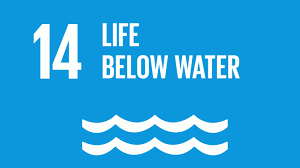

Life Below Water
Goal 14 is about conserving and sustainably using the oceans, seas and marine resources. A healthy ocean and seas are essential to human existence and life on Earth. The Ocean is intrinsic to our life on earth. Covering three-quarters of the Earth’s surface, contain 97 percent of the Earth’s water, and represent 99 percent of the living space on the planet by volume. It provides key natural resources including food, medicines, biofuels and other products; help with the breakdown and removal of waste and pollution; and their coastal ecosystems act as buffers to reduce damage from storms. It also acts as the planet’s greatest carbon sink. Worryingly, marine pollution is reaching extreme levels, with over 17 million metric tons clogging the ocean in 2021, a figure set to double or triple by 2040. Plastic is the most harmful type of ocean pollution. Despite increased conservation efforts, only 8.4% of the ocean is currently designated as marine protected areas—well below the 30% target set for 2030. Just 46% of marine key biodiversity areas are under formal protection. Meanwhile, ocean warming, acidification, overfishing, and illegal practices continue to threaten marine ecosystems, and support for small-scale fisheries remains inadequate. Currently, the ocean’s average pH is 8.1 which is about 30 per cent more acidic than in pre- industrial times. Ocean acidification threatens the survival of marine life, disrupts the food web, and undermines vital services provided by the ocean and our own food security. Careful management of this essential global resource is a key feature of a sustainable future. This includes increasing funding for ocean science, intensifying conservation efforts, and urgently turning the tide on climate change to safeguard the planet’s largest ecosystem. Current efforts to protect are not yet meeting the urgent need to safeguard this vast, yet fragile, resource. Why? The ocean is our planet’s life support and regulate the global climate system. It is the world’s largest ecosystem, home to nearly a million known species and containing vast untapped potential for scientific discovery. Oceans and fisheries continue to support the global population’s economic, social and environmental needs. Despite the critical importance of conserving oceans, decades of irresponsible exploitation have led to an alarming level of degradation. So what’s the problem? The ocean absorbs around 23 per cent of annual CO2 emissions generated by human activity and helps mitigate the impacts of climate change. The ocean has also absorbed more than 90% of the excess heat in the climate system. Ocean heat is at record levels, causing widespread marine heatwaves, threatening its rich eco-systems and killing coral reefs around the world. The world is now in the midst of a fourth global coral bleaching event, which is considered the most widespread and intense on record. Between January 2023 and May 2025, bleaching-level heat stress affected 84 per cent of reefs globally, across 83 countries and territories. The bleaching event is so severe that coral mortality alert levels have been expanded beyond their original scale. Increasing levels of debris in the world’s oceans are also having a major environmental and economic impact. Every year, an estimated 5 to 12 million metric tonnes of plastic enters the ocean, costing roughly $13 billion per year – including clean-up costs and financial losses in fisheries and other industries. About 89% of plastic litter found on the ocean floor are single-use items like plastic bags. About 80% of all tourism takes place in coastal areas. The ocean-related tourism industry grows an estimated US$ 134 billion per year and in some countries, the industry already supports over a third of the labour force. Unless carefully managed, tourism can pose a major threat to the natural resources on which it depends, and to local culture and industry. How is the ocean connected to our health? The health of the ocean is intimately tied to our health. The diversity of species found in the ocean offers great promise for pharmaceuticals. Furthermore, marine fisheries provide 57 million jobs globally and provide the primary source of protein to over 50% of the population in least developed countries. So, what can we do? The third United Nations Ocean Conference, held in Nice in June 2025, offered renewed momentum as countries adopted a bold political declaration and made over 800 voluntary commitments focused on marine protection, pollution control, high-seas governance and support for vulnerable nations. A key milestone was progress towards the Agreement on Marine Biological Diversity of Areas beyond National Jurisdiction (the BBNJ Agreement); that provides a legal framework for all activities in the ocean and seas; with 19 new ratifications bringing the total to 50 States – just 10 States short of the 60 needed for the Agreement to enter into force. For open ocean and deep sea areas, sustainability can be achieved only through increased international cooperation to protect vulnerable habitats. Establishing complete, effective and equitably managed systems of government-protected areas should be pursued to conserve bio-diversity and ensure a sustainable future for the fishing industry. One example is the Biodiversity Beyond National Jurisdiction Agreement in 2023 that provides a legal framework for all activities in the ocean and seas. On a local level, we should make ocean- friendly choices when buying products or eating food derived from oceans and consume only what we need. Reducing our plastic use is critical. Goal 14 is about conserving and sustainably using the oceans, seas and marine resources. Healthy oceans and seas are essential to human existence and life on Earth. The Ocean is intrinsic to our life on earth. Covering three-quarters of the Earth’s surface, contain 97 percent of the Earth’s water, and represent 99 percent of the living space on the planet by volume. They provide key natural resources including food, medicines, biofuels and other products; help with the breakdown and removal of waste and pollution; and their coastal ecosystems act as buffers to reduce damage from storms. They also act as the planet’s greatest carbon sink. Worryingly, marine pollution is reaching extreme levels, with over 17 million metric tons clogging the ocean in 2021, a figure set to double or triple by 2040. Plastic is the most harmful type of ocean pollution. Currently, the ocean’s average pH is 8.1 which is about 30 per cent more acidic than in pre- industrial times. Ocean acidification threatens the survival of marine life, disrupts the food web, and undermines vital services provided by the ocean and our own food security. Careful management of this essential global resource is a key feature of a sustainable future. This includes increasing funding for ocean science, intensifying conservation efforts, and urgently turning the tide on climate change to safeguard the planet’s largest ecosystem. Current efforts to protect are not yet meeting the urgent need to safeguard this vast, yet fragile, resource. Why? The ocean is our planet’s life support and regulate the global climate system. It is the world’s largest ecosystem, home to nearly a million known species and containing vast untapped potential for scientific discovery. Oceans and fisheries continue to support the global population’s economic, social and environmental needs. Despite the critical importance of conserving oceans, decades of irresponsible exploitation have led to an alarming level of degradation. So what’s the problem? The ocean absorbs around 23 per cent of annual CO2 emissions generated by human activity and helps mitigate the impacts of climate change. The ocean has also absorbed more than 90% of the excess heat in the climate system. Ocean heat is at record levels, causing widespread marine heatwaves, threatening its rich eco-systems and killing coral reefs around the world. Increasing levels of debris in the world’s oceans are also having a major environmental and economic impact. Every year, an estimated 5 to 12 million metric tonnes of plastic enters the ocean, costing roughly $13 billion per year – including clean-up costs and financial losses in fisheries and other industries. About 89% of plastic litter found on the ocean floor are single-use items like plastic bags. About 80% of all tourism takes place in coastal areas. The ocean-related tourism industry grows an estimated US$ 134 billion per year and in some countries, the industry already supports over a third of the labour force. Unless carefully managed, tourism can pose a major threat to the natural resources on which it depends, and to local culture and industry. How is the ocean connected to our health? The health of the ocean is intimately tied to our health. The diversity of species found in the ocean offers great promise for pharmaceuticals. Furthermore, marine fisheries provide 57 million jobs globally and provide the primary source of protein to over 50% of the population in least developed countries.